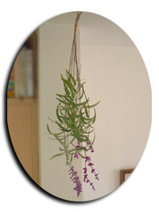
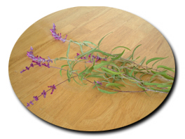
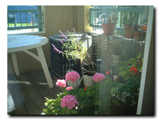
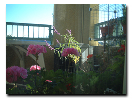

kkoisland.com 季節の風景
*.+..☆.+.+..
季節の風景
..+.+.☆..+.*
観察記録、季節の花や草、自然に関する写真のページ
[過去の季節の風景]
2004.11.25 Thur.
..+☆ セージの花 ☆+..
咲いていたセージの花を全部カットしました。ドライフラワーにしようと思います。


2004.11.11 Thur.
..+☆ バルコニーの観察記録 ☆+..
涼しくなって、ゼラニウムがまた、咲きはじめました。この写真は部屋の中か ら見たところです。


..*..*..*..*..*..*..*..*..*..*..*..*..*..*..*..*..*..*..*..*..*..